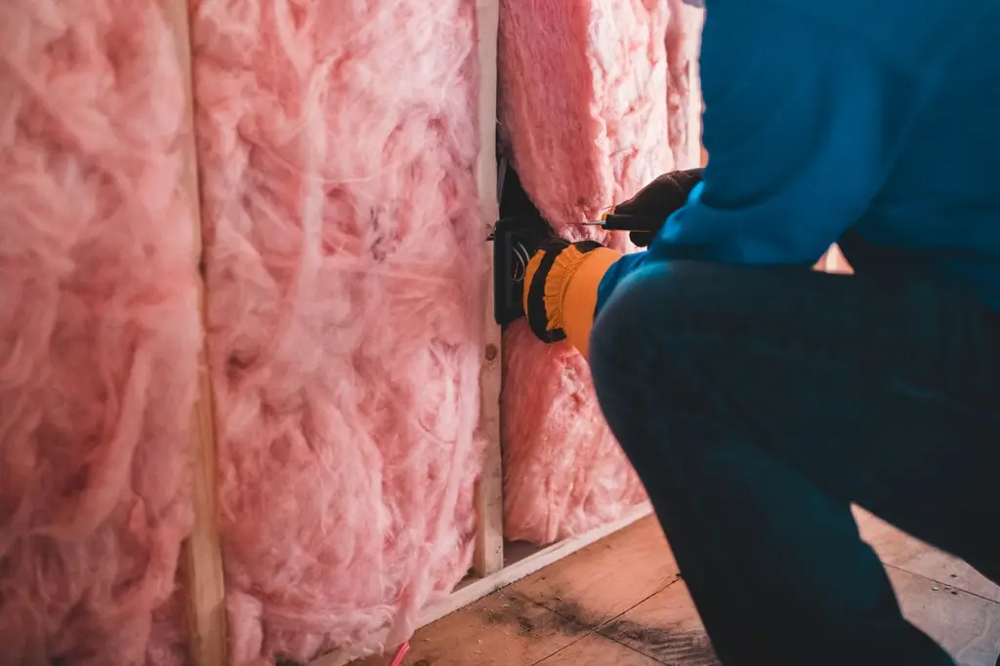

Combles perdus
Soufflage de laine minérale ou de ouate de cellulose sur toute la surface. Chantier rapide, sans toucher à vos pièces de vie.
Une maison chaude l'hiver, et des factures qui baissent.
Combles, murs, planchers : on repère d'abord par où votre maison perd sa chaleur, puis on isole ce qui compte vraiment. Artisan RGE, nous vous aidons à monter vos dossiers d'aides.
Réponse sous 24 h, visite sur place dans la semaine.

Cliquez sur votre situation : le formulaire se remplit tout seul.
Nos travaux
Soufflage de laine minérale ou de ouate de cellulose sur toute la surface. Chantier rapide, sans toucher à vos pièces de vie.
Isolation sous rampants avec pare-vapeur, pour transformer un grenier en chambre agréable été comme hiver.
Doublage isolant pièce par pièce, finition plaques prêtes à peindre. Idéal lors d'une rénovation.
Isolant fixé en façade puis enduit : vous gardez toute votre surface habitable et rafraîchissez la façade.
Panneaux isolants posés sous le plancher, depuis le garage, la cave ou le vide sanitaire.
Avant tout devis, on regarde votre maison, votre chauffage et vos factures pour prioriser les travaux.
Comment ça se passe
Téléphone ou formulaire : dites-nous ce qui vous gêne, froid, humidité ou factures.
On inspecte combles, murs et planchers et on vous dit ce qui rapportera le plus.
Devis détaillé avec les aides possibles. On vous accompagne pour les dossiers.
Combles souvent faits en une journée. Nettoyage complet avant notre départ.
Chantiers récents
Rezé · Maison des années 70
Nantes · Longère rénovée
Orvault · Pavillon
Nos engagements
Antoine Garnier, gérant, artisan RGE depuis 2009
« L'étage était glacial l'hiver. Depuis l'isolation des combles, on a baissé le chauffage d'un cran et il fait bon partout. »
« Ils nous ont aidés pour le dossier d'aides de A à Z. Chantier fini en une journée, rien à nettoyer derrière eux. »
Questions fréquentes
Votre question n'est pas là ?
Appelez-nous au 02 61 91 42 17.
Le plus souvent par la toiture : la chaleur monte, et des combles mal isolés sont une des premières sources de pertes. La visite thermique permet de confirmer l'ordre des travaux chez vous.
Selon vos revenus et vos travaux, des aides nationales et des primes énergie peuvent réduire la facture, à condition de passer par un artisan RGE comme nous. Nous vérifions votre éligibilité lors de la visite.
Des combles perdus s'isolent le plus souvent en une journée. Des combles aménagés ou une isolation de murs prennent quelques jours à deux semaines selon la surface.
L'intérieur coûte moins cher mais réduit un peu la surface des pièces. L'extérieur préserve la surface et traite les ponts thermiques, mais demande souvent une déclaration en mairie. On compare les deux chez vous.
Non. Pour les combles et les planchers, nous travaillons sans entrer dans vos pièces de vie. Pour les murs intérieurs, on avance pièce par pièce.
Laine de verre, laine de roche, ouate de cellulose ou fibre de bois : chacun a ses atouts selon l'endroit, le budget et le confort d'été recherché. Nous vous conseillons selon votre maison.
Devis gratuit
Deux minutes pour nous décrire votre logement. On vous rappelle pour fixer la visite thermique, gratuite et sans engagement.
Du lundi au vendredi, 8 h à 18 h
8 rue de la Fonderie, 44300 Nantes
Nous intervenons à Nantes, Saint-Herblain, Rezé, Orvault, Carquefou, Vertou, Sainte-Luce-sur-Loire, La Chapelle-sur-Erdre, Bouguenais.